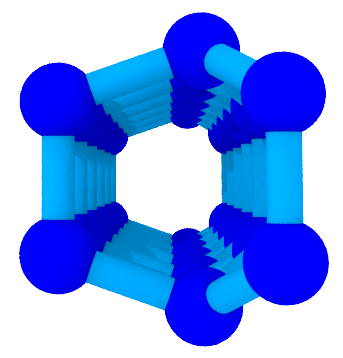
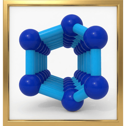
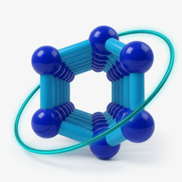
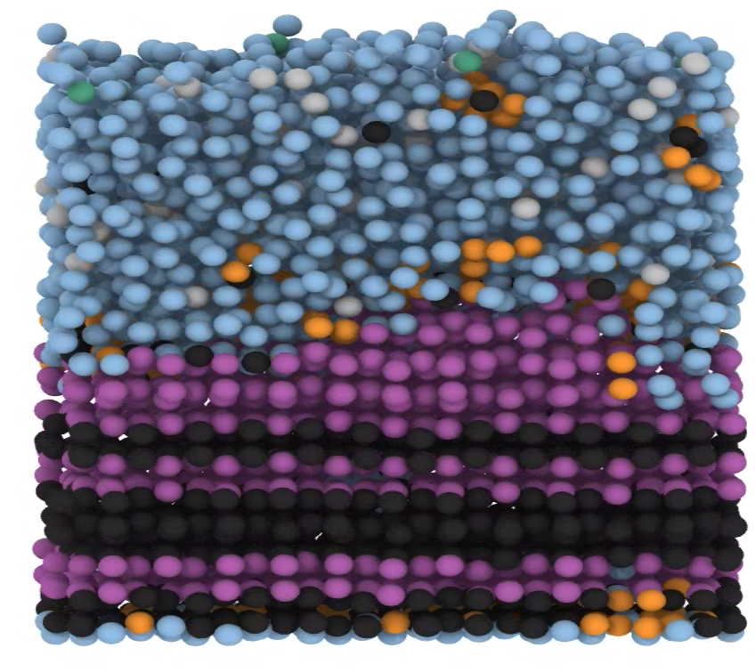
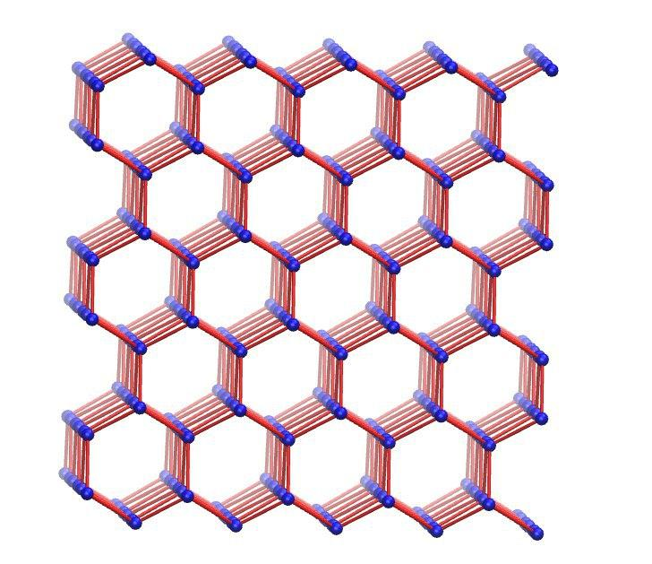
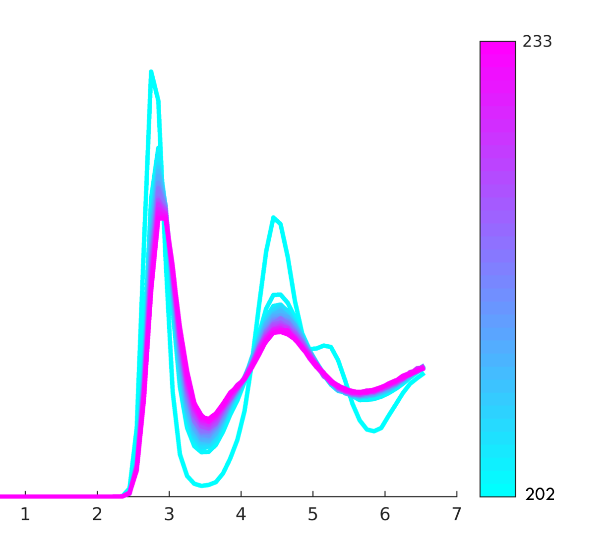
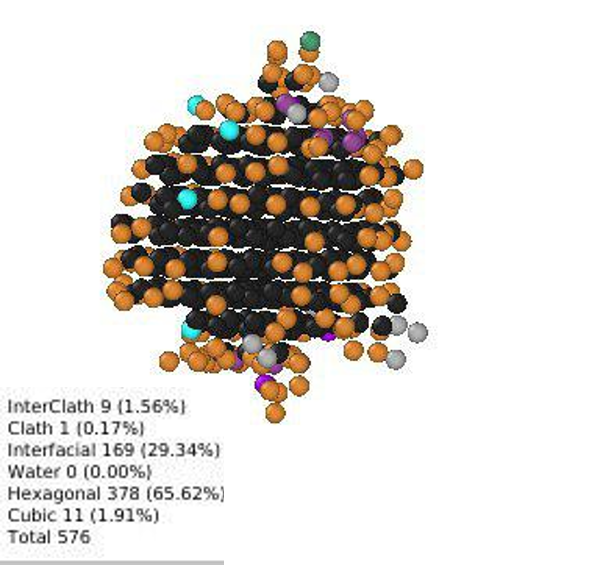
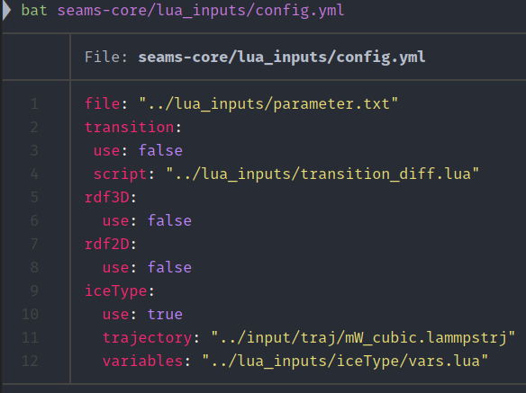
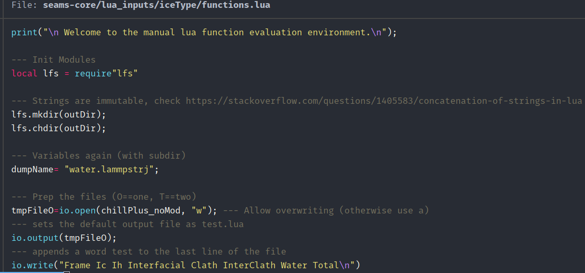

1.x / 2020
One yodaStruct executable. YAML plus Lua. JCIM paper.

Deferred Structural Elucidation Analysis for Molecular Simulations
Version 2.7.0 is the seams-core engine and the seams CLI. Python, Lua, PLUMED, and linkcell live in their own repositories. 2.x has an expanded team.
2.x
Users install the public names below. Install and API detail live on docs.dseams.info and the binding books.
One yodaStruct executable. YAML plus Lua. JCIM paper.
seams CLI from seams-core v2.7.0. pydseamslib on PyPI. yodaStruct for Lua and Fennel. dseams-plumed for DSEAMS_CAGES. linkcell for periodic kNN.
| Stage | N | 1.x scan | 2.x |
|---|---|---|---|
| neighbour list | 32000 | 862.2 | 43.5 |
| ring index | 32000 | 5955.5 | 42.4 |
| CHILL+ | 32000 | 111.5 | 44.8 |
| six-rings | 4096 | 100.7 | 13.9 |
| findHC | 4096 | 3582.9 | 45.2 |
v2.7.0. The seams CLI on the C++ engine.

v2.7.0. pip install pydseamslib; import pydseams. Frame API, features for deeptime and PyEMMA, and ion environment helpers.

v2.7.0. Lua and Fennel. require("dseams").
v0.1.0. The DSEAMS_CAGES PLUMED action.
Periodic linked-cell k-nearest neighbours for Rust, C, C++, and Python.
CON input. Repository: HaoZeke/readcon-core.
Six repositories live under github.com/d-SEAMS: seams-core, PydSEAMSlib, yodaStruct, linkcell, wiki, and landing. Companion trees are HaoZeke/dseams-plumed and HaoZeke/dseams2_repro. CON input is HaoZeke/readcon-core.
seams CLI
DSEAMS_CAGES
Install the Python wheel with pip install pydseamslib; the import remains pydseams. The seams CLI commands are read, chill, chill-plus, cages, rdf, cn, hbonds, pairs, density-z, and domains.
seams read water.lammpstrj
seams chill-plus water.lammpstrj --cutoff 3.5
seams cages water.lammpstrjimport pydseams as ds
frame = ds.read("water.lammpstrj")
print(frame.chill_plus())
print(frame.cages())local dseams = require("dseams")
local cloud = dseams.read("water.lammpstrj")
print(dseams.chill_plus(cloud, {cutoff = 3.5}))Four-neighbour star. Labels cubic, hexagonal, interfacial, clathrate, and water. It does not assign cage membership.
Hexagonal cages (HC) are ice Ih. Double-diamond cages (DDC) are ice Ic. Everything else is water on that score.






The published nix install of the single yodaStruct binary.
Use the runnable seams, pip install pydseamslib, and require("dseams") examples above. The package books document each complete API.
1.x recording
Goswami, R.; Goswami, A.; Singh, J. K. d-SEAMS: Deferred Structural Elucidation Analysis for Molecular Simulations. J. Chem. Inf. Model. 2020. 10.1021/acs.jcim.0c00031 / arXiv:1909.09830
Software 2.x authors are listed in each package's CITATION.cff. The reproducibility package is dseams2_repro.